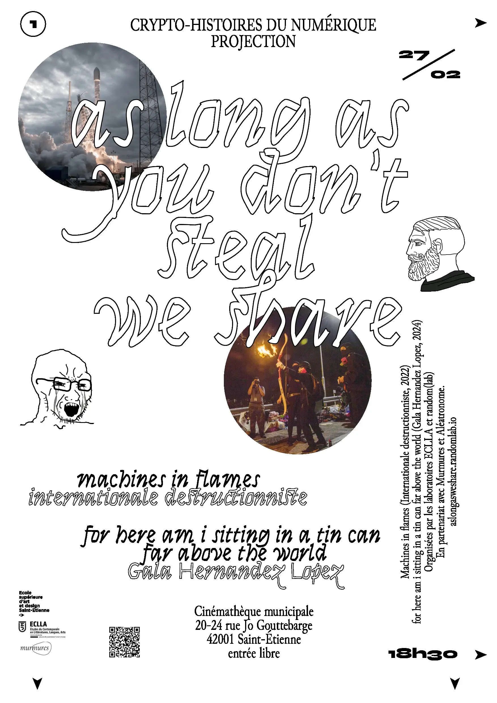

Cinémathèque de Saint Etienne
20-24 Rue Jo Gouttebarge, 42000 Saint-Étienne
entrée libre
Machines in flames Internationale destructionniste, 50 min, 2022
Dans les années 1980 à Toulouse, un groupe insaisissable a commencé à bombarder des entreprises informatiques. Le « CLODO » a disparu au bout de trois ans, sans jamais avoir été arrêté ni avoir refait parler de lui. Deux réalisateurs lancent une enquête sur le CLODO, à la recherche de réponses, de motivations et d'identités, mais ils sont rapidement frustrés par un collectif qui a frappé au cœur de la nuit, ne laissant sur ses traces que des cendres et le tracé sporadique d'un graffiti cryptique. Le film combine des traces d'archives, une chorégraphie de bureau virale et des enregistrements vidéo nocturnes des cibles de CLODO dans une méditation sur l'informatique, la destruction et l'attrait des archives.
for here am i sitting in a tin can far above the world Gala Hernandez Lopez, 19 min, 2024
Une femme rêve d’une future crise économique affectant le marché des crypto-monnaies. Des milliers de personnes ont été cryogénisées, en attendant des temps meilleurs… for here am i sitting in a tin can far above the world est un film épistolaire psychédélique vertigineux et chargé d’inquiétude. Sommes-nous tous suspendus ou tombons-nous dans le vide ? Et quelle étrange relation entretenons-nous avec l’avenir ?

n°2
Véritables photocopies originales Workshop
Jeudi 13 Mars de 9 à 19h
ESADSE Pôle Edition
Que peut une photocopieuse ? Nul ne sait. Cet atelier vous invitera à faire un éloge de la Xerox à travers une publication sprint en collectif : une « brochure d’artiste » réunissant des photocopies créatives produite au fil d’une journée. La copie est originale ! On se rencontrera autour de quelques œuvres d’art à base de photocopies (Bruno Munari, Marie Losier…) , de quelques textes théoriques à propos de cette machine (Kate Eichorn, Umberto Eco…) et d’un exercice d’écriture. Ce matériel constituera le tremplin pour bricoler les pages d’une édition-manifeste pour L’amicale de la photocopieuse (infokiosque saisonnier sur droit d’auteur, économies alternatives de la culture et infrastructures indépendantes de diffusion). Une seule contrainte : faire avec la photocopieuse. En écho à l’exposition d’Anne Bourse au MAMC+.
Jacopo Rasmi (enseignant-chercheur à l’Université Jean Monnet) et Pascaline Morincome : artiste-autrice, curatrice et chercheuse. Ses recherches portent sur l’histoire des pratiques artistiques collectives et participatives, en particulier sur la production vidéo alternative et ses archives. Elle a été co-responsable de la galerie d’art associative Treize (Paris).
n°3
À l’ombre de l’économie Rencontres
Vendredi 28 Mars 18h30
Bar de l’aube
61 Rue Antoine Durafour, 42100 Saint-Étienne
entrée libre, bar sur place.
Lecture constellatoire de pratiques pirates de partage de livres Coll. Les nouveaux habits du colportage
Cette lecture constellatoire tentera de déplier les pratiques pirates de partage de livres rencontrées au fil de la recherche Les nouveaux habits du colportage » qui interroge les formes d’infrastructures de partage que constituent les « bibliothèques parallèles ». À partir des fragments colportés, nous nous baladerons au sein d'une constellation sensible mettant en relation tant des pratiques, protocoles, dispositifs fictifs et imaginaires croisés en chemin, que des textes parcourus et autres documents glanés.
Les nouveaux habits du colportage, collectif de recherche, est soutenu par le Fond de Recherche en Art (FRArt) de la région Wallonie-Bruxelles. Il est porté par Alexia de Visscher, Léonard Mabille et Alice Néron, designers graphiques, enseignant·es, étudiante et amateur·ices de livres copiés.
Quelques contradictions Eva Barto
Ce sera l’occasion de parler de mon parcours (les expos autour de l’économie de l’art, les éditions avec Buttonwood Press, l’émission radio ForTune, le collectif La Buse…), de donner des anecdotes, de parler d’un chemin qui va du monde de l’art vers le militantisme, vers la pédagogie. Et de parler aussi de toutes les contradictions là-dedans, les miennes, celles du milieu... et après on en discute ?
Eva Barto est artiste. Son travail a fait l'objet de plusieurs expositions personnelles, à la galerie gb agency (Paris, 2016), au Centre d’Art de la Villa Arson, (Nice, 2016) au Kunstverein Nuremberg, au Kunstlerhaus Stuttgart (2021), au Plateau Frac Ile-de-France, ainsi qu'au Macro Museum à Rome (2022). Il a également été présenté dans des expositions collectives, notamment à la galerie Marcelle Alix (Paris, 2015), à la Biennale de Rennes (2016), à Kadist Foundation (Paris, 2016), à la Fondation d’Entreprise Ricard (Paris, 2017, 2019), au Wattis Art Center (San Francisco, 2017) à la galerie Max Mayer (2018, 2021), au musée de la Secession (Vienne, 2018), à la Biennale d’Anafi (Grèce, 2019), à la galerie Konrad Fischer (2024), ainsi qu’au Palais de Tokyo (2024). En 2024-2025 elle sera résidente aux Laboratoires d’Aubervilliers ainsi qu’à Buenos Aires dans le cadre du project « Economics of Hospitality » coordonné par Sylvie Fortin. En 2016, elle créé le projet éditorial Buttonwood.Press. Elle est co-fondatrice du collectif de droits des travailleur-euses de l'art La Buse et a co-animé l'émission ForTune sur * Duuu Radio. Depuis 2019, elle enseigne à l'Ecole des Beaux-Arts de Lyon.
n°4
Retro Gaming Reverse Engineering Workshop
Jeudi 17 et vendredi 18 Avril Mercredi 7 et vendredi 9 Mai
Pôle numérique de L'ESADSE
Cet atelier de 4 jours propose un temps de recherche et de création autour de la pratique du */reverse engineering /* de la culture internet, du /hacking/, de l'émulation et du /modding/. Comment, à partir de jeux vidéo existants, il est possible d'extraire des sources audio, visuelles et/ou textuelles dans l'idée de produire de nouveaux objets/formes/choses/pièces mais également de les partager. En fournissant des outils techniques et méthodologiques, nous proposons de penser ces jours comme des moments de réflexions autour de la fabrication spécifique à Internet et aux formes collectives.
Paul Bouniot est artiste, diplômé de l'école supérieure d’arts plastiques de Grenoble-Valence et de Monaco Sa pratique questionne les images et leur production, les mondes du travail et notamment les mondes de l'art, le capitalisme néo-libéral et ses valeurs pour tenter d'y trouver des failles et de se fabriquer des moyens et manières de s'y mouvoir.
Samantha Zannoni est designeuse graphique diplômée de l'école supérieure d'art et design de Valence, et actuellement technicienne au pôle numérique de l'école supérieure d'art et design de Saint-Étienne. Elle a une pratique de la programmation web, du dessin et de la publication sous forme numérique ou papier.
n°5
Périphéries du droit d’auteur Rencontres et projection
Jeudi 17 Avril 18h
Bar de l’aube
61 Rue Antoine Durafour, 42100 Saint-Étienne
entrée libre, bar sur place.
C’est à vouloir en sortir, qu’implacablement on y rentre. Extractivismes, droit d’auteur, libre Sarah Mekdijan
Enseignante chercheure à l’Université, je suis prise dans une structure qui produit le statut d’autrice, originale et souveraine, jouissant de droits de propriété intellectuelle. Le statut de chercheur.e fonctionnaire a ceci de particulier qu’il est lié à la notion d’« autonomie » : mes droits d’autrice m’appartiennent exclusivement, je n’ai pas à les céder à l’institution universitaire où je suis salariée. Propriété intellectuelle et autonomie sont ainsi corrélées et sont défendues, comme conditions d’exercice de la « liberté académique ». Dans le champ artistique, l’autonomie propriétaire, garantie de la liberté de création, est aussi centrale. Or, le droit d’auteur est aussi la condition de la privatisation, de l’enclosure, de la marchandisation de ce qui est rendu valorisable et échangeable, de la mise en concurrence, de l’exploitation des auteur.trices (avec un droit d’auteur bien moins solidaire que le droit du travail), de l’extractivisme -coupure de liens vivants, au profit d’un ordre souverain propriétaire, de déresponsabilisations des institutions. En complément de cette double impasse d’une liberté servile, vouloir sortir du droit d’auteur, comme tentent, par exemple, des licences de « sciences ouvertes », sont des manières, implacablement, comme j’essaierai de le montrer, de renforcer l’ubérisation.
Sarah Mekdjian enseigne et mène des recherches à l’Université de Grenoble au département de géographie sociale. Elle s’inquiète des conditions juridiques et matérielles des travaux en sciences sociales, des rapports capitalistes et postcoloniaux qui les produisent. Parmi ces questions, les im-possibilités du droit d’auteur et de la propriété intellectuelle, en lien avec les droits des étrangers et des citoyens, sont mises en jeu dans l’ouvrage L’intérêt à agir. Quand l’art s’inquiète du droit des étrangers et du droit d’auteur, paru en 2023 aux éditions Lorelei, et co-signé avec Patrick Bernier, Laye Diakité, Aliou Diallo, Pathé Diallo, Olive Martin, Cynthia Montier, Marie Moreau, Saâ Raphaël Moundekeno, et Abdul-Hadi Yasuev.
Désobéissances technologiques. El paquete, SNet et Marakka 2000 Ernesto Oroza
Cuba est un pays des Caraïbes dirigé depuis 1959 par un régime communiste autoproclamé. L’embargo commercial et financier sur l'île décrété par les USA dans les années 1960 est toujours en vigueur. Cet isolement est aggravé par le contrôle étroit exercé par le gouvernement sur la libre circulation de l'information et l'accès aux ressources et aux biens de base, ce qui a eu un impact sur la vie quotidienne à Cuba pendant de nombreuses années. Pendant des décennies, le gouvernement lui-même a pratiqué la piraterie audiovisuelle pour fournir du matériel aux chaînes de télévision officielles. Dans les universités du pays, des centaines de livres et de publications périodiques internationales ont été piratés pour répondre aux besoins des étudiants en matière d'éducation et d'information. El paquete, SNet & Marakka 2000 constituent trois histoires de contournement des contraintes institutionnelles et techniques en lien avec la communauté cubaine de l’île et de la diaspora. Trois histoires d’infrastructures alternatives de diffusion de la culture en situation de nécessité.
Suivi de la projection de « Marakka 2012 » Magdiel Aspillaga et Ernesto Oroza, 35 min, 2012
Depuis 1983, Waldo Fernandez « Marakka » rassemble des archives de la mémoire audiovisuelle cubaine. La collection, qui fonctionne commercialement sous la marque « Marakka 2000 », s'appuie et exploite une faille créée par les relations diplomatiques actuelles entre Cuba et les États-Unis, et est soutenue par une compréhension précise et astucieuse des procédures actuelles concernant la protection des droits d'auteur aux États-Unis.
Ernesto Oroza est designer, artiste, chercheur, diplômé de l'Institut Supérieur de Design de l'université de la Havane, responsable du 3e cycle Design et recherche à l'École Supérieure d'art et de design de Saint-Étienne, directeur éditorial d'Azimuts, Ernesto Oroza s’est intéressé aux architectures de la nécessité, à la désobéissance technologique et autres sujets qui relient design et société en temps de crise économique et politique. Sa pratique achemine la tradition de l’architecture radicale dans une utilisation analytique des typologies d’objets contemporains et des forces de production.
n°6
L’amicale de la photocopieuse (en continu)
Infokiosque saisonnier, autour de la propriété intellectuelle, le travail artistique et les infrastructures de diffusion culturelle. Brochures à profusion, gratuites et dans la limite des stocks. From Xerox with love !